I had previously posted the complete text of the Journey of Souls by Michael Newton. This post, unfortunately, was fraught with problems. It was poorly formatted, had errors galore, and most strikingly created confusion. The book, as great as it is, was written by an imperfect person who did not understand the MWI and world-lines. Neither did his patients. They were stuck in the quaint notion of a Heaven and a Hell, and a shared physical universe. And their answers, and comments, reflected those beliefs. And, as a result, ended up generating confusion.
And I ended up having to deal with it.
Jeeze! Guys!
"Why did you, of all people, put such new age mumbo jumbo in your blog? Just when I was starting to understand things, you throw a wrench into everything and show that you are just another con artist. "
Sigh…
I can understand the anguish.
Doctor Newton, and his patients, would make statements along the lines of “shared experiences” which implied that two consciousnesses would occupy the same world-line simultaneously. Which is wrong, or at best, partially true. Or discuss instances of a consciousness communicating with a living person in the physical. Sure, all these things are observations from the point of view of a given consciousness; one that does not fully understand what is going on.
Thus this post.
Here, we are going to take the great writings of the good Doctor Newton and expand upon them. We will elaborate on what is actually going on from a (dispassionate) fourth person perspective, instead of the second-person narrative.
Which is unfortunate. I kind of hoped that people would be able to have some degree of discernment. A work by someone else ALWAYS includes their own personal biases, and misunderstandings.
So this post is going to take the good writings of the good doctor and try to edit out the misconceptions and place some insight into what is actually going on.
This thus is useful for a person to understand the following things about the non-physical world;
- Firstly, the point of view of a given consciousness. (The book.)
- Secondly, what is going on pertaining to the mechanics of the non-physical reality. (My comments.)
For us, as a person using our consciousness, we are often confused as things might or might not make sense to us.
It is like we are trapped in a car that we just woke up in. We look out the window and see a storm of water, wind and movement. We look at the toddler in the front seat to tell us what is going on, but they are not much help. It's only when the car-wash attendant comes to the window do we realize that we were actually inside a car wash.
This post discusses the operation of the car wash, in reference to a book that describes the feelings and perceptions of the inhabitants inside the car.
Thus, this is a very useful post. It provides both the stories and the experiences of consciousness, along with the “nuts and bolts’ mechanics of the operation and what is actually going on.
Multiple Part Post
This post is a multiple part post. I have labeled them…
- The Geography of Heaven; Journey of Souls – 1a – This post.
- The Geography of Heaven; Journey of Souls – 1b
- The Geography of Heaven; Journey of Souls – 1c
- The Geography of Heaven; Journey of Souls – 1d
- The Geography of Heaven; Journey of Souls – 1e
This is an annotation to the Journey of Souls book
I politely suggest that the reader, go ahead and read the initial post (the raw book) first HERE, and then start going thought this post. As this is a “study guide” that uses the book as a medium from which to discuss the nature of the non-physical world.
About the MAJestic disclosure and this…
OK. Well it took a long time to come about, but now we are finally getting to the part of “the disclosure” that I am entrusted with disclosing. Nope. It’s not about who our extraterrestrial benefactors are, or about the nature of our physical universe. It is about our role inside the physical universe as it pertains to the non-physical universe.
What? You think that MAJestic was “only” about the reverse engineering of extraterrestrial artifacts? Did you, eh?
Maybe the bulk of it was, but my role and the role of Sebastian was far deeper and involved interaction / interfacing with a society of individuals who’s very nature was inherently much larger than what we humans perceive. And for us to improve our lot, as humans on Earth, we need to understand why our non-physical reality is so darn important.
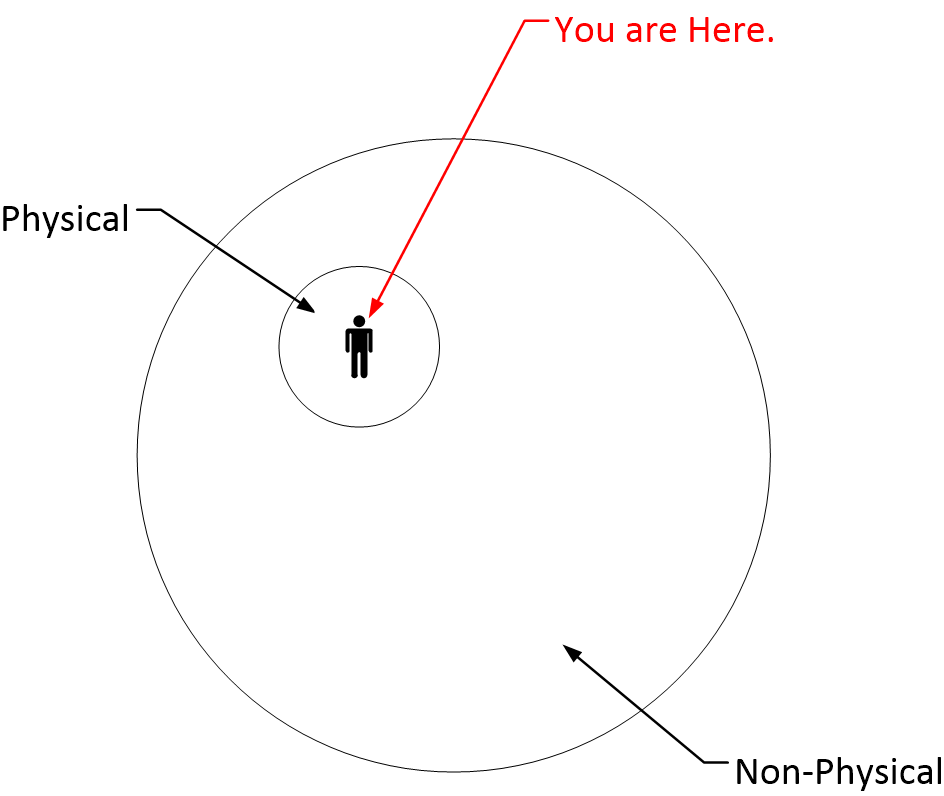
For mankind, human-kind, or our species to advance in a unified sentience, we will need to understand our role in the “big picture”, and that boys and girls means the non-physical reality; the so called “Heaven”.
And those of you that are worried about what the “Big Boys” think about all this, rest easy. The PTB are concerned with the overall well-being of a world that is increasingly overpopulated, greedy and “out of control”. They want a smaller, more compact, and far more “reasonable” world for us to live in. And unfortunately, that means that there will need to be a sorting process…
We all must need to know our place and role in the big scale of things. This is the first step to our personal enlightenment.
Journey of Souls by Michael Newton
Table of Contents
- Death and Departure
- Gateway to the Spirit World
- Homecoming
- The Displaced Soul
- Orientation
- Transition
- Placement
- Our Guides The Beginner Soul
- The Intermediate Soul
- The Advanced Soul
- Life Selection
- Choosing a New Body
- Preparation for Embarkation
- Rebirth
Introduction by Dr. Newton
You would know the hidden realm where all souls dwell. The journey’s way lies through death’s misty fell. Within this timeless passage a guiding light does dance, Lost from conscious memory, but visible in trance. -M.N.
ARE you afraid of death? Do you wonder what is going to happen to you after you die? Is it possible you have a spirit which came from somewhere else and will return there after your body dies, or is this just wishful thinking because you are afraid?
It is a paradox that humans, alone of all creatures of the Earth, must repress the fear of death in order to lead normal lives. Yet our biological instinct never lets us forget this ultimate danger to our being. As we grow older, the specter of death rises in our consciousness. Even religious people fear death is the end of personhood. Our greatest dread of death brings thoughts about the nothingness of death which will end all associations with family and friends. Dying makes all our earthly goals seem futile.
If death were the end of everything about us, then life indeed would be meaningless.
However, some power within us enables humans to conceive of a hereafter and to sense a connection to a higher power and even an eternal soul. If we do actually have a soul, then where does it go after death? Is there really some sort of heaven full of intelligent spirits outside our physical universe? What does it look like? What do we do when we get there? Is there a supreme being in charge of this paradise? These questions are as old as humankind itself and still remain a mystery to most of us.
The true answers to the mystery of life after death remain locked behind a spiritual door for most people. This is because we have built-in amnesia about our soul identity which, on a conscious level, aids in the merging of the soul and human brain.
In the last few years the general public has heard about people who temporarily died and then came back to life to tell about seeing a long tunnel, bright lights, and even brief encounters with friendly spirits. But none of these accounts written in the many books on reincarnation has ever given us anything more than a glimpse of all there is to know about life after death.
This book is an intimate journal about the spirit world. It provides a series of actual case histories which reveal in explicit detail what happens to us when life on Earth is over. You will be taken beyond the spiritual tunnel and enter the spirit world itself to learn what transpires for souls before they finally return to Earth in another life.
I am a skeptic by nature, although it will not seem so from the contents of this book. As a counselor and hypnotherapist, I specialize in behavior modification for the treatment of psychological disorders. A large part of my work involves short-term cognitive restructuring with clients by helping them connect thoughts and emotions to promote healthy behavior. Together we elicit the meaning, function, and consequences of their beliefs because I take the premise that no mental problem is imaginary.
In the early days of my practice, I resisted past life requests from people because of my orientation toward traditional therapy. While I used hypnosis and age- regression techniques to determine the origins of disturbing memories and childhood trauma, I felt any attempt to reach a former life was unorthodox and non-clinical. My interest in reincarnation and metaphysics was only intellectual curiosity until I worked with a young man on pain management.
This client complained of a lifetime of chronic pain on his right side. One of the tools of hypnotherapy to manage pain is directing the subject to make the pain worse so he or she can also learn to lessen the aching and thus acquire control. In one of our sessions involving pain intensification, this man used the imagery of being stabbed to recreate his torment. Searching for the origins of this image, I eventually uncovered his former life as a World War I soldier who was killed by a bayonet in France, and we were able to eliminate the pain altogether.
With encouragement from my clients, I began to experiment with moving some of them further back in time before their last birth on Earth. Initially I was concerned that a subject’s integration of current needs, beliefs, and fears would create fantasies of recollection.
However, it didn’t take long before I realized our deep-seated memories offer a set of past experiences which are too real and connected to be ignored. I came to appreciate just how therapeutically important the link is between the bodies and events of our former lives and who we are today.
Then I stumbled on to a discovery of enormous proportions. I found it was possible to see into the spirit world through the mind’s eye of a hypnotized subject who could report back to me of life between lives on Earth.
The case that opened the door to the spirit world for me was a middle-aged woman who was an especially receptive hypnosis subject. She had been talking to me about her feelings of loneliness and isolation in that delicate stage when a subject has finished recalling their most recent past life. This unusual individual slipped into the highest state of altered consciousness almost by herself Without realizing I had initiated an overly short command for this action, I suggested she go to the source of her loss of companionship. At the same moment I inadvertently used one of the trigger words to spiritual recall. I also asked if she had a specific group of friends whom she missed.
Suddenly, my client started to cry. When I directed her to tell me what was wrong, she blurted out,
“I miss some friends in my group and that’s why I get so lonely on Earth.”
I was confused and questioned her further about where this group of friends was actually located.
“Here, in my permanent home,”
She answered simply,
“...and I’m looking at all of them right now!”
After finishing with this client and reviewing her tape recordings, I recognized that finding the spirit world involved an extension of past life regression. There are many books about past lives, but none I could find which told about our life as souls, or how to properly access the spiritual recollections of people.
I decided to do the research myself and with practice I acquired greater skill in entering the spirit world through my subjects. I also learned that finding their place in the spirit world was far more meaningful to people than recounting their former lives on Earth.
How is it possible to reach the soul through hypnosis?
Visualize the mind as having three concentric circles, each smaller than the last and within the other, separated only by layers of connected mind-consciousness. The first outer layer is represented by the conscious mind which is our critical, analytic reasoning source. The second layer is the subconscious, where we initially go in hypnosis to tap into the storage area for all the memories that ever happened to us in this life and former lives. The third, the innermost core, is what we are now calling the superconscious mind. This level exposes the highest center of Self where we are an expression of a higher power.
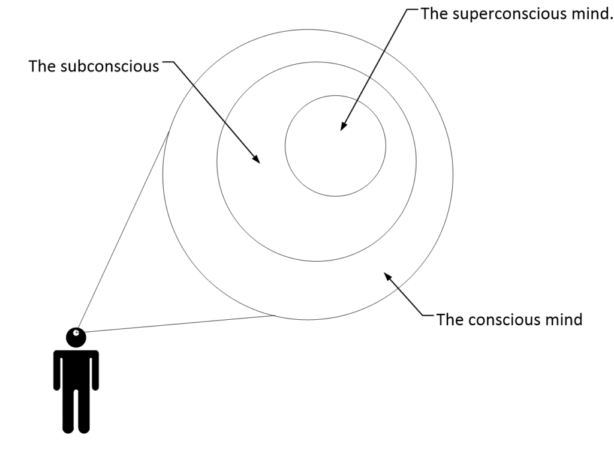
The superconscious houses our real identity, augmented by the subconscious which contains the memories of the many alter-egos assumed by us in our former human bodies. The superconscious may not be a level at all, but the soul itself. The superconscious mind represents our highest center of wisdom and perspective, and all my information about life after death comes from this source of intelligent energy.
How valid is the use of hypnosis for uncovering truth?
People in hypnosis are neither dreaming nor hallucinating. We don’t dream in chronological sequences nor hallucinate in a directed trance state.
When subjects are placed in trance, their brain waves slow from the Beta wake state and continue to change vibration down past the meditative Alpha stage into various levels within the Theta range. Theta is hypnosis-not sleep. When we sleep we go to the final Delta state where messages from the brain are dropped into the subconscious and vented through our dreams. In Theta, however, the conscious mind is not unconscious, so we are able to receive as well as send messages with all memory channels open.
- Your 5 Brainwaves: Delta, Theta, Alpha, Beta and Gamma
- 5 Types Of Brain Waves Frequencies: Gamma, Beta, Alpha …
- Different Types of Brain Waves: Delta, Theta, Alpha, Beta …
- Types of brain waves: Delta, Theta, Alpha, Beta and Gamma …
- Types of brain waves: Delta, Theta, Alpha and Gamma
- This Is How Brain Waves Contribute To The State of Mind
- The 5 Brain waves and its Connection with Flow State
- What is the function of the various brainwaves …
- Brain Waves and the Deeper States of Consciousness
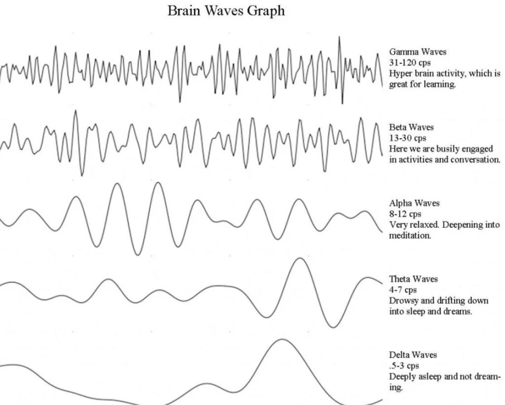
Once in hypnosis, people report the pictures they see and dialogue they hear in their unconscious minds as literal observations.
In response to questions, subjects cannot lie, but they may misinterpret something seen in their unconscious mind, just as we do in the conscious state. In hypnosis, people have trouble relating to anything they don’t believe is the truth.
Some critics of hypnosis believe a subject in trance will fabricate memories and bias their responses in order to adopt any theoretical framework suggested by the hypnotist. I find this generalization to be a false premise.
In my work, I treat each case as if I were hearing the information for the first time. If a subject were somehow able to overcome hypnosis procedure and construct a deliberate fantasy about the spirit world, or free-associate from pre-set ideas about their afterlife, these responses would soon become inconsistent with my other case reports.
I learned the value of careful cross-examination early in my work and I found no evidence of anyone faking their spiritual experiences to please me.
In fact, subjects in hypnosis are not hesitant in correcting my misinterpretations of their statements. As my case files grew, I discovered by trial and error to phrase questions about the spirit world in a proper sequence. Subjects in a superconscious state are not particularly motivated to volunteer information about the whole plan of soul life in the spirit world.
One must have the right set of “keys” for specific “doors”.
Eventually, I was able to perfect a reliable method of memory access to different parts of the spirit world by knowing which door to open at the right time during a session.
As I gained confidence with each session, more people sensed I was comfortable with the hereafter and felt it was all right to speak to me about it. The clients in my cases represent some men and women who were very religious, while others had no particular spiritual beliefs at all. Most fall somewhere in between, with a mixed bag of personal philosophies about life.
The astounding thing I found as I progressed with my research was that once subjects were regressed back into their soul state they all displayed a remarkable consistency in responding to questions about the spirit world. People even use the same words and graphic descriptions in colloquial language when discussing their lives as souls.
However, this homogeneity of experience by so many clients did not stop me from continually trying to verify statements between my subjects and corroborate specific functional activities of souls.
There were some differences in narrative reporting between cases, but this was due more to the level of soul development than to variances in how each subject basically saw the spirit world.
The research was painfully slow, but as the body of my cases grew I finally had a working model of the eternal world where our souls live. I found thoughts about the spirit world involve universal truths among the souls of people living on Earth.
It was these perceptions by so many different types of people which convinced me their statements were believable. I am not a religious person, but I found the place where we go after death to be one of order and direction, and I have come to appreciate that there is a grand design to life and afterlife.
When I considered how to best present my findings, I determined the case study method would provide the most descriptive way in which the reader could evaluate client recall about the afterlife. Each case I have selected represents a direct dialogue between myself and a subject. The case testimonies are taken from tape recordings from my sessions.
This book is not intended to be about my subjects’ past lives, but rather a documentation of their experiences in the spirit world relating to those lives.
For readers who may have trouble conceptualizing our souls as non-material objects, the case histories listed in the early chapters explain how souls appear and the way in which they function. Each case history is abbreviated to some extent because of space constraints and to give the reader an orderly arrangement of soul activity.
The chapters are designed to show the normal progression of souls into and out of the spirit world, incorporated with other spiritual information.
The travels of souls from the time of death to their next incarnation has come to me from a ten-year collection of clients.
It surprised me at first, that I had people who remembered parts of their soul life more clearly after distant lifetimes than recent ones. Yet, for some reason, no one subject was able to recall the entire chronology of soul activities I have presented in this book. My clients remember certain aspects of their spiritual life quite vividly, while other experiences are hazy to them. As a result, even with these twenty-nine cases, I found I could not give the reader the full range of information I have gathered about the spirit world. Thus, my chapters contain details from more cases than just the twenty-nine listed.
The reader may consider my questioning in certain cases to be rather demanding. In hypnosis, it is necessary to keep the subject on track. When working in the spiritual realm, the demands on a facilitator are higher than with past life recall.
In trance, the average subject tends to let his or her soul-mind wander while watching interesting scenes unfold. My clients often want me to stop talking so they can detach from reporting what they see and just enjoy their past experiences as souls. I try to be gentle and not overly structured, but my sessions are usually single ones which run three hours in length and there is a lot to cover. People may come long distances to see me and not be able to return.
I find it very rewarding to watch the look of wonder on a client’s face when his or her session ends.
For those of us who have had the opportunity to actually see our immortality, a new depth of self-understanding and empowerment emerges.
Before awakening my subjects, I often implant appropriate post-suggestion memories. Having a conscious knowledge of their soul life in the spirit world and a history of physical existences on planets gives these people a stronger sense of direction and energy for life.
Finally, I should say that what you are about to read may come as a shock to your preconceptions about death. The material presented here may go against your philosophical and religious beliefs. There will be those readers who will find support for their existing opinions.
For others, the information offered in these cases will all appear to be subjective tales resembling a science fiction story. Whatever your persuasion, I hope you will reflect’ upon the implications for humanity if what my subjects have to say about life after death is accurate.
Death and Departure Case 1
S. (Subject): Oh, my god! I’m not really dead-am I? I mean, my body is dead-I can see it below me-but I’m floating… I can look down and see my body lying flat in the hospital bed. Everyone around me thinks I’m dead, but I’m not. I want to shout, hey, I’m not really dead! This is so incredible … the nurses are pulling a sheet over my head… people I know are crying. I’m supposed to be dead, but I’m still alive! It’s strange, because my body is absolutely dead while I’m moving around it from above. I’m alive!
THESE are the words spoken by a man in deep hypnosis, reliving a death experience. His words come in short, excited bursts and are full of awe, as he sees and feels what it is like to be a spirit newly separated from a physical body.
This man is my client and I have just assisted him in recreating a past life death scene while he lies back in a comfortable recliner chair. A little earlier, following my instructions during his trance induction, this subject was age-regressed in a return to childhood memories. His subconscious perceptions gradually coalesced as we worked together to reach his mother’s womb.
I then prepared him for a jump back into the mists of time by the visual use of protective shielding.
When we completed this important step of mental conditioning, I moved my subject through an imaginary time tunnel to his last life on Earth.
It was a short life because he had died suddenly from the influenza epidemic of 1918.
As the initial shock of seeing himself die and feeling his soul floating out of his body begins to wear off a little, my client adjusts more readily to the visual images in his mind. Since a small part of the conscious, critical portion of his mind is still functioning, he realizes he is recreating a former experience. It takes a bit longer than usual since this subject is a “younger soul” and not so used to the cycles of birth, death, and rebirth as are many of my other clients.
Yet, within a few moments he settles in and begins to respond with greater confidence to my questions. I quickly raise this subject’s subconscious hypnotic level into the superconscious state. Now he is ready to talk to me about the spirit world, and I ask what is happening to him.
S: Well … I’m rising up higher … still floating … looking back at my body. It’s like watching a movie, only I’m in it! The doctor is comforting my wife and daughter. My wife is sobbing (subject wiggles with discomfort in his chair). I’m trying to reach into her mind … to tell her everything is all right with me. She is so overcome by grief I’m not getting through. I want her to know my suffering is gone … I’m free of my body … I don’t need it any more … that I will wait for her. I want her to know that … but she is … not listening to me. Oh, I’m moving away now …
And so, guided by a series of commands, my client starts the process of moving further into the spirit world.
It is a road many others have traveled in the security of my office.
Typically, as memories in the superconscious state expand, subjects in hypnosis become more connected to the spiritual passageway. As the session moves forward, the subject’s mental pictures are more easily translated into words.
Short descriptive phrases lead to detailed explanations of what it is like to enter the spirit world.
We have a great deal of documentation, including observations from medical personnel, which describes the out-of-body near-death experiences of people severely injured in accidents.
These people were considered clinically dead before medical efforts brought them back from the other side.
Souls are quite capable of leaving and returning to their host bodies, particularly in life-threatening situations when the body is dying’. People tell of hovering over their bodies, especially in hospitals, watching doctors perform life-saving procedures on them. In time these memories fade after they return to life.
In the early stages of hypnosis regression into past lives, the descriptions of subjects mentally going through their past deaths do not contradict the reported statements of people who have actually died in this life for a few minutes.
The difference between these two groups of people is that subjects in hypnosis are not remembering their experiences of temporary death. People in a deep trance state are capable of describing what life is like after permanent physical death.
What are the similarities of afterlife recollection between people reporting on their out-of-body experiences as a result of a temporary physical trauma and a subject in hypnosis recalling death in a past life?
Both find themselves floating around their bodies in a strange way, trying to touch solid objects which dematerialize in front of them.
Both kinds of reporters say they are frustrated in their attempts to talk to living people who don’t respond.
Both state they feel a pulling sensation away from the place where they died and experience relaxation and curiosity rather than fear.
All these people report a euphoric sense of freedom and brightness around them. Some of my subjects see brilliant whiteness totally surrounding them at the moment of death, while others observe the brightness is farther away from an area of darker space through which they are being pulled. This is often referred to as the tunnel effect, and has become well known with the public.
![This is what is going on. There are two (possibly many other) universes involved. Our consciousness experiences "time" in one universe. This time is a sequence of trips in and out through multiple world-lines. All the time in a frequency of vibration around 4Hz. It switches back and forth between wave and particle. Up until he moment of death. Then, it is in the universe of physical realities, but not within a given world-line. To leave this universe it needs to "cross over" and exit it and go to a different universe. This is often described as going through a tunnel of light.](../assets/img/the-geography-of-heaven-journey-of-souls-full-text-by-michael-newton-par-4afeab/how-death-manifests-in-the-many-world-lines-1024x538.gif)
My second case will take us further into the death experience than Case 1.
The subject here is a man in his sixties describing to me the events of his death as a young woman called Sally, who was killed by Kiowa Indians in an attack on a wagon train in 1866.
Although this case and the last one relate death experiences after their most immediate past lives, a particular death date in history has no special relevance because it is recent. I find no significant differences between ancient and modern times in terms of graphic spirit world recall, or the quality of lessons learned.
I should also say the average subject in trance has an uncanny ability to zero in on the dates and geographic locations of many past lives. This is true even in earlier periods of human civilization, when national borders and place names were different than exist today. Former names, dates, and locations may not always be easily recalled in every past life, but descriptions about returning to the spirit world and life in that world are consistently vivid.
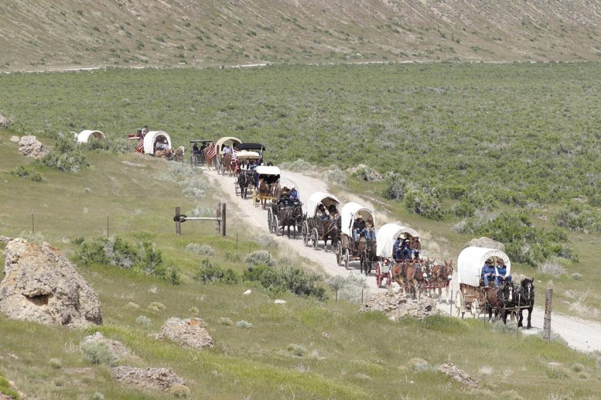
The scene in Case 2 opens on the American southern plains right after an arrow has struck Sally in the neck at close range. I am always careful with death scenes involving violent trauma in past lives because the subconscious mind often still retains these experiences. The subject in this case came to me because of a lifetime of throat discomfort. Release therapy and deprogramming is usually required in these cases. In all past life recall, I use the time around death for quiet review and place the subject in observer status to soften pain and emotion.
Case 2 – Sally dies by an arrow
Dr. N: Are you in great pain from the arrow?
S: Yes … the point has torn my throat … I’m dying (subject begins to whisper while holding his hands at the throat). I’m choking… blood pouring down … Will (husband) is holding me … the pain … terrible … I’m getting out now … it’s over, anyway.
Note: Souls often leave their human hosts moments before actual death when their bodies are in great pain. Who can blame them? Nevertheless, they do stay close by the dying body. After calming techniques, I raise this subject from the subconscious to the superconscious level for the transition to spiritual memories.
Dr. N: All right, Sally, you have accepted being killed by these Indians. Will you please describe to me the exact sensation you feel at the time of death?
S: Like … a force … of some kind … pushing me up out of my body.
Dr. N: Pushing you? Out where?
S: I’m ejected out the top of my head.
Dr. N: And what was pushed out?
S: Well-me!
Dr. N: Describe what “me” means. What does the thing that is you look like going out of the head of your body?
S: (pause) Like a … pinpoint of light … radiating…
Dr. N: How do you radiate light?
S: From… my energy. I look sort of transparent white my soul…
Dr. N: And does this energy light stay the same after leaving your body?
S: (pause) I seem to grow a little … as I move around.
Dr. N: If your light expands, then what do you look like now?
S: A… wispy … string… hanging …
Dr. N: And what does the process of moving out of your body actually feel like to you?
S: Well, it’s as if I shed my skin … peeling a banana. I just lose my body in one swoosh!
Dr. N: Is the feeling unpleasant?
S: Oh no! It’s wonderful to feel so free with no more pain, but … I am… disoriented … I didn’t expect to die …
(sadness is creeping into my client’s voice and I want him to stay focused on his soul for a minute more, rather than what is taking place on the ground with his body)
Dr. N: I understand, Sally. You are feeling a little displacement at the moment as a soul. This is normal in your situation for what you have just gone through. Listen and respond to my questions. You said you were floating. Are you able to move around freely right after death?
S: It’s strange … it’s as if I’m suspended in air that isn’t air … there are no limits… no gravity… I’m weightless.
Dr. N: You mean it’s sort of like being in a vacuum for you?
S: Yes… nothing around me is a solid mass. There are no obstacles to bump into… I’m drifting…
Dr. N: Can you control your movements-where you are going?
S: Yes … I can do some of that … but there is … a pulling … into a bright whiteness … it’s so bright!
Dr. N: Is the intensity of whiteness the same everywhere?
S: Brighter … away from me … it’s a little darker white … gray … in the direction of my body … (starts to cry) oh, my poor body … I’m not ready to leave yet. (subject pulls back in his chair as if he is resisting something)
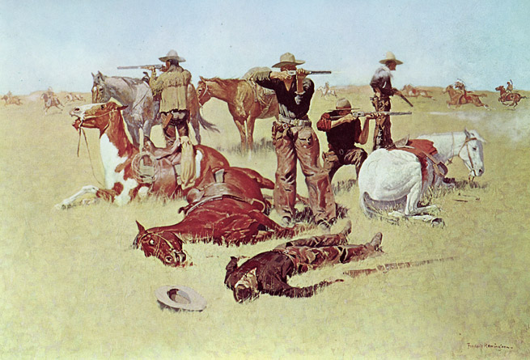
Dr. N: It’s all right, Sally, I’m with you. I want you to relax and tell me if the force that took you out of your head at the moment of death is still pulling you away, and if you can stop it.
S: (pause) When I was free of my body the pulling lessened. Now, I feel a nudge … drawing me away from my body … I don’t want to go yet … but, something wants me to go soon …
Dr. N: I understand, Sally, but I suspect you are learning you have some element of control. How would you describe this thing that is pulling you?
S: A … kind of magnetic … force … but … I want to stay a little longer …
Dr. N: Can your soul resist this pulling sensation for as long as you want?
S: (there is a long pause while the subject appears to be carrying on an internal debate with himself in his former life as Sally) Yes, I can, if I really want to stay. (subject starts to cry) Oh, it’s awful what those savages did to my body. There is blood all over my pretty blue dress … my husband Will is trying to hold me and still fight with our friends against the Kiowa.
Note: I reinforce the imagery of a protective shield around this subject, which is so important as a foundation to calming procedures. Sally’s soul is still hovering over her body after I move the scene forward in time to when the Indians are driven off by the wagon train rifles.
Dr. N: Sally, what is your husband doing right after the attack?
S: Oh, good … he isn’t hurt … but … (with sadness) he is holding my body … crying over me … there is nothing he can do for me, but he doesn’t seem to realize that yet. I’m cold, but his hands are around my face … kissing me.
Dr. N: And what are you doing at this moment?
S: I’m over Will’s head. I’m trying to console him. I want him to feel my love is not really gone … I want him to know he has not lost me forever and that I will see him again.
Dr. N: Are your messages getting through?
S: There is so much grief, but he … feels my essence … I know it. Our friends are around him … and they separate us finally … they want to reform the wagons and get started again.
Dr. N: And what is going on now with your soul?
S: I’m still resisting the pulling sensation … I want to stay.
Dr. N: Why is that?
S: Well, I know I’m dead … but I’m not ready to leave Will yet and I want to watch them bury me.
Dr. N: Do you see or feel any other spiritual entity around you at this moment?
S: (pause) They are near … soon I will see them … I feel their love as I want Will to feel mine … they are waiting until I’m ready.
Dr. N: As time passes, are you able to comfort Will? S: I’m trying to reach inside his mind.
Dr. N: And are you successful?
S: (pause) I … think a little … he feels me … he realizes … love…
Dr. N: All right, Sally, now we are going to move forward in relative time again. Do you see your wagon train friends placing your body in some kind of grave?
S: (voice is more confident) Yes, they have buried me. It’s time for me to go … they are coming for me now… I’m moving… into a brighter light…
Contrary to what some people believe, souls often have little interest in what happens to their bodies once they are physically dead. This is not callousness over personal situations and the people they leave behind on Earth, but an acknowledgement of these souls to the finality of mortal death. They have a desire to hurry on their way to the beauty of the spirit world.
What the person’s consciousness sees at this moment in time is the shock of an abrupt ending of a time track at death.
However, many other souls want to hover around the place where they died for a few Earth days, usually until after their funerals. Time is apparently accelerated for souls and days on Earth may be only minutes to them. There are a variety of motivations for the lingering soul. For instance, someone who has been murdered or killed unexpectedly in an accident often does not want to leave right away. I find these souls are frequently bewildered or angry. The hovering soul syndrome is particularly true of deaths with young people.
When a given consciousness wants to “stay” and visit loved ones, its mostly due to the fact that the traumatic events of the death is preventing them from seeing the reality around them.
They are not looking around and seeing their loved ones (or a percentage part off their loved ones) are outside of the physical reality as well. You are never alone.
To abruptly detach from a human form, even after a long illness, is still a jolt to the average soul and this too may make the soul reluctant to depart at the moment of death. There is also something symbolic about the normal three- to five-day funeral arrangement periods for souls. Souls really have no morbid curiosity to see themselves buried because emotions in the spirit world are not the same as we experience here on Earth. Yet, I find soul entities appreciate the respect given to the memory of their physical life by surviving relatives and friends.
As we saw in the last case, there is one basic reason for many spirits not wanting to immediately leave the place of their physical death.
This comes from a desire to mentally reach out to comfort loved ones before progressing further into the spirit world. Those who have just died are not devastated about their death, because they know those left on Earth will see them again in the spirit world and probably later in other lives as well.
Consciousnesses might spend the bulk of their time in one world-line as they experience time, but that is not where all the consciousness or soul is.
It is all over the place in many different world-lines simultaneously. Thus, in this case Sally died. Her consciousness left the last world-line. Those others that she cared about (Will) did not die on that world line. However, Will’s consciousness is not limited to that world-line. He is in other world-lines as well. Most as “quantum shadows”, but also in a non-physical state as well.
And as such, all Sally need do is look for Will OUTSIDE of the given world-line to see him, or at least part of him.
On the other hand, mourners at a funeral generally feel they have lost a loved one forever.
During hypnosis, my subjects do recall frustration at being unable to effectively use their energy to mentally touch a human being who is unreceptive due to shock and grief. Emotional trauma of the living may overwhelm their inner minds to such an extent that their mental capabilities to communicate with souls are inhibited. When a newly departed soul does find a way to give solace to the living-however briefly- they usually are satisfied and want to then move on quickly away from Earth’s astral plane.
I had a typical example of spiritual consolation in my own life.
My mother died suddenly from a heart attack. During her burial service, my sister and I were so filled with sadness our minds were numb at the ceremony. A few hours later we returned to my mother’s empty house with our spouses and decided to take a needed rest.
My sister and I must have reached the receptive Alpha state at about the same time.
Appearing in two separate rooms, my mother came through our subconscious minds as a dream-like brush of whiteness above our heads. Reaching out, she smiled, indicating her acceptance of death and current well-being. Then she floated away. Lasting only seconds, this act was a meaningful form of closure, causing both of us to release into a sound sleep of the Delta state.
About four days later, me and my two friends were sleeping the dorm after a night of drinking beer. At around 3am we all suddenly woke up and all of us were sitting up. We all had a dream that Marty was telling us that he was fine and well and not to worry about him. It was so loving and kind that we have never forgot that experience..
We are capable of feeling the comforting presence of the souls of lost loved ones, especially during or right after funerals. For spiritual communication to come through the shock of mourning it is necessary to try to relax and clear your mind, at least for short periods. At these moments our receptivity to a paranormal experience is more open to receive positive communications of love, forgiveness, hope, encouragement, and the reassurance your loved one is in a good place.
When a widow with young children says to me, “A part of my husband comes to me during the difficult times,” I believe her.
My clients tell me as souls they are able to help those on Earth connect their inner minds to the spirit world itself As it has been wisely said, people are not really gone as long as they are remembered by those left on Earth.
In the chapters ahead, we will see how specific memory is a reflection of our own soul, while collective memories are the atoms of pure energy for all souls.
Death does not break our continuity with the immortal soul of those we love simply because they have lost the physical personhood of a mortal body. Despite their many activities, these departed souls are still able to reach us if called upon.
Occasionally, a disturbed spirit does not want to leave the Earth after physical death. This is due to some unresolved problem which has had a severe impact on its consciousness. In these abnormal cases, help is available from higher, caring entities who can assist in the adjustment process from the other side. We also have the means to aid disturbed spirits in letting go on Earth, as well. I will have more to say about troubled souls in Chapter Four, but the enigma of ghosts portrayed in books and movies has been greatly overblown.
How should we best prepare for our own death?
Our lives may be short or long, healthy or sick, but there comes that time when we all must meet death in a way suited for us. If we have had a long illness leading to death, there is time to adequately prepare the mind once initial shock, denial, and depression have passed.
The mind takes a short cut through this sort of progression when we face death suddenly.
As the end of our physical life draws near, each of us has the capacity to fuse with our higher consciousness. Dying is the easiest period in our lives for spiritual awareness, when we can sense our soul is connected to the eternity of time.
Although there are dying people who find acceptance to be more difficult than resignation, caregivers working around the dying say most everyone acquires a peaceful detachment near the end. I believe dying people are given access to a supreme knowledge of eternal consciousness and this frequently shows in their faces. Many of these people realize something universal is out there waiting and it will be good.
This can be slower or faster.
In any event, the brain and the person interprets this as a general calming effect as there is a greater percentage of conscious “duration” within a wave state..
Dying people are undergoing a metamorphosis of separation by their souls from an adopted body. People associate death as losing our life force, when actually the opposite is true. We forfeit our body in death, but our eternal life energy unites with the force of a divine oversoul.
Death is not darkness, but light.
My clients say after recalling former death experiences they are so filled with rediscovered freedom from their earthbound bodies that they are anxious to get started on their spiritual journey to a place of peace and familiarity. In the cases which follow, we will learn what life is like for them in afterlife.
Gateway to the Spirit World
For thousands of years the people of Mesopotamia believed the gates into and out of heaven lay at opposite ends of the great curve of the Milky Way, called the River of Souls. After death, souls had to wait for the rising doorway of Sagittarius and the autumn equinox, when day and night are equal. Reincarnation back to Earth could only take place during the spring equinox through the Gemini exit in their night sky.
My subjects tell me that soul migration is actually much easier.
The tunnel effect they experience when leaving Earth is the portal into the spirit world. Although souls leave their bodies swiftly, it seems to me entry into the spirit world is a carefully measured process. Later, when we return to Earth in another life, the route back is described as being more rapid.
The location of the tunnel in relation to the Earth has some variations between the accounts of my subjects.
Some newly dead people see it opening up next to them right over their bodies, while others say they move high above the Earth before they enter the tunnel. In all cases, however, the time lapse in reaching this passageway is negligible once the soul leaves Earth.
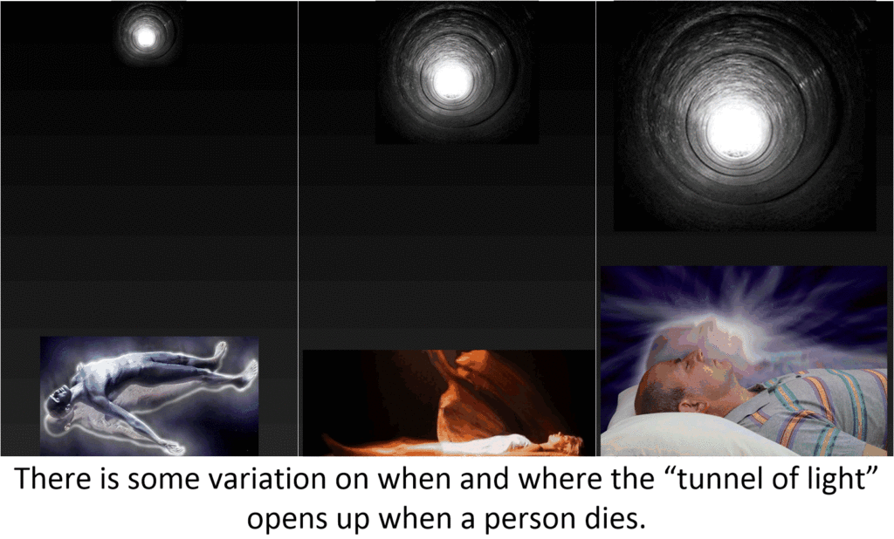
Here are the observations of another individual in this spiritual location.
Case 3 – The Tunnel of Light
Dr. N: You are now leaving your body. See yourself moving further and further away from the place where you died, away from the plane of Earth. Report back to me what you are experiencing.
S: At first … it was very bright … close to the Earth … now it’s a little darker because I have gone into a tunnel.
Dr. N: Describe this tunnel for me.
S: It’s a … hollow, dim vent … and there is a small circle of light at the other end. Dr. N: Okay, what happens to you next?
S: I feel a tugging … a gentle pulling… I think I’m supposed to drift through this tunnel … and I do. It is more gray than dark now, because the bright circle is expanding in front of me. It’s as if… (client stops)
Dr. N: Go on.
S: I’m being summoned forward …
Dr. N: Let the circle of light expand in front of you at the end of the tunnel and continue to explain what is happening to you.
S: The circle of light grows very wide and … I’m out of the tunnel. There is a … cloudy brightness … a light fog. I’m filtering through it.
Dr. N: As you leave the tunnel, what else stands out in your mind besides the lack of absolute visual clarity?
S: (subject lowers voice) It’s so … still … it is such a quiet place to be in … I am in the place of spirits
Not just the sounds of the physical world-lines that lie as part of the “time track” that the consciousness was part of, but the thoughts of all the “quantum shadows” nearby.
Dr. N: Do you have any other impressions at this moment as a soul?
S: Thought! I feel the … power of thought all around …….
Dr. N: Just relax completely and let your impressions come through easily as you continue to report back to me exactly what is happening to you. Please go on.
S: Well, it’s hard to put into words. I feel… thoughts of love companionship … empathy … and it’s all combined with … anticipation … as if others are … waiting for me.
Dr. N: Do you have a sense of security, or are you a little scared?
S: I’m not scared. When I was in the tunnel, I was more … disoriented. Yes, I feel secure … I’m aware of thoughts reaching out to me of caring … nurturing. It is strange, but there is also the understanding around me of just who I am and why I am here now.
Dr. N: Do you see any evidence of this around you?
S: (in a hushed tone) No, I sense it-a harmony of thought everywhere.
Dr. N: You mentioned cloud-like substances around you right after leaving the tunnel. Are you in a sky over Earth?
S: (pause) No-not that-but I seem to be floating through cloud stuff which is different from Earth.
Dr. N: Can you see the Earth at all? Is it below you?
S: Maybe it is, but I haven’t seen it since I went in the tunnel.
Dr. N: Do you sense you are still connected to Earth through another dimension, perhaps?
S: That’s a possibility-yes. In my mind Earth seems close … and I still feel connected to Earth … but I know I’m in another space.
Dr. N: What else can you tell me about your present location?
S: It’s still a little … murky … but I’m moving out of this.
This particular subject, having been taken through the death experience and the tunnel, continues to make tranquil mental adjustments to her bodiless state while pulling further into the spirit world. After some initial uncertainty, her first reported impressions reflect an inviting sense of well-being.
This is a common feeling among my subjects.
Once through the tunnel, our souls have passed the initial gateway of their journey into the spirit world. Most now fully realize they are not really dead, but have simply left the encumbrance of an Earth body which has died.
With this awareness comes acceptance in varying degrees depending upon the soul. Some subjects look at these surroundings with continued amazement while others are more matter-of-fact in reporting to me what they see.
Much depends upon their respective maturity and recent life experiences.
The most common type of reaction I hear is a relieved sigh followed by something on the order of, ” wonderful, I’m home in this beautiful place again.”
There are those highly developed souls who move so fast out of their bodies that much of what I am describing here is a blur as they home into their spiritual destinations. These are the pros and, in my opinion, they are a distinct minority on Earth.
The average soul does not move that rapidly and some are very hesitant.
If we exclude the rare cases of highly disturbed spirits who fight to stay connected with their dead bodies, I find it is the younger souls with fewer past lives who remain attached to Earth’s environment right after death.
Most of my subjects report that as they emerge from the mouth of the tunnel, things are still unclear for awhile. I think this is due to the density of the nearest astral plane surrounding Earth, called the kamaloka by Theosophists.
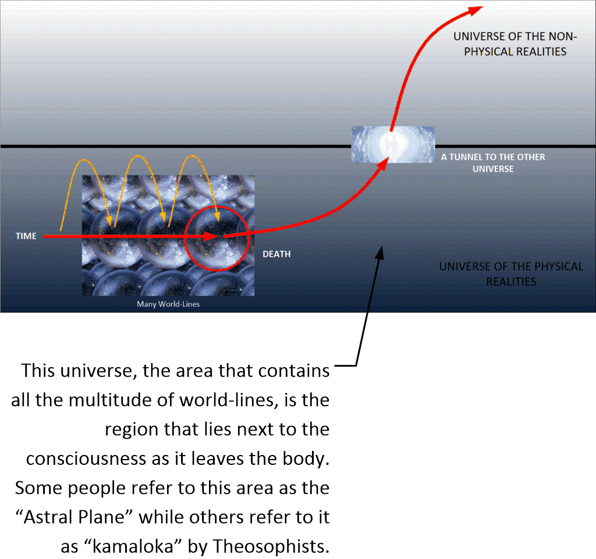
The next case describes this area from the perspective of a more analytical client. The soul of this individual demonstrates considerable observational insight into form, colors, and vibrational levels. Normally, such graphic physical descriptions by my subjects occur deeper into the spirit world after they get used to their surroundings.
Case 4 – Exiting the “Tunnel of Light” and entering the “Heaven” Universe.
Dr. N: As you move further away from the tunnel, describe what you see around you in as much detail as possible.
S: Things are … layered.
Dr. N: Layered in what way?
S: Umm, sort of like … a cake.
Dr. N: Using a cake as a model, explain what you mean?
S: I mean some cakes have small tops and are wide at the bottom. It’s not like that when I get through the tunnel. I see layers … levels of light … they appear to me to be .. translucent… indented…
Dr. N: Do you see the spirit world here as made up of a solid structure?
S: That’s what I’m trying to explain. It’s not solid, although you might think so at first. It’s layered-the levels of light are all woven together in … stratified threads. I don’t want to make it sound like things are not symmetrical-they are. But I see variations in thickness and color refraction in the layers. They also shift back and forth. I always notice this as I travel away from Earth.
Our consciousness can interpret the visualization of this effect as light. For after all, that is the way our eyes see things, through colors and light.
What is actually going on is that the subject is perceiving the different levels of quanta that make up the physical universe. He / she “sees” it as light.
The quanta has the ability to move from one universe to another, so it should not be misunderstood. The consciousness can see quanta in different universes.
Dr. N: Why do you think this is so?
S: I don’t know. I didn’t design it.
Dr. N: From your description, I picture the spirit world as a huge tier with layers of shaded sections from top to bottom.
S: Yes, and the sections are rounded-they curve away from me as I float through them.
Dr. N: From your position of observation, can you tell me about the different colors of the layers?
S: I didn’t say the layers had any major color tones. They are all variations of white. It is lighter … brighter where I’m going, than where I have been. Around me now is a hazy whiteness which was much brighter than the tunnel.
Dr. N: As you float through these spiritual layers, is your soul moving up or down?
S: Neither. I am moving across.
Dr. N: Well, then, do you see the spirit world at this moment in linear dimensions of lines and angles as you move across?
S: (pause) For me it is … mostly sweeping, non-material energy which is broken into layers by light and dark color variations. I think something is … pulling me into my proper level of travel and trying to relax me, too …
Dr. N: In what way?
S: I’m hearing sounds.
Dr. N: What sounds?
S: An … echo … of music … musical tingling … wind chimes … vibrating with my movements … so relaxing.
Dr. N: Other people have defined these sounds as vibrational in nature, similar to riding on the resonance from the twang of a tuning fork. Do you agree or disagree with this description?
Each interpretation is based on a human sense. As that this the soul construction that the consciousness is familiar with.
This includes all the sense, from sight to taste, to sound, to vibration, to touch. And since the consciousness can apply human sensations to these quanta, the ability to manipulate the quanta can create human-like constructions.
S: (nods in assent) Yes, that’s what this is … and I have a memory of scent and taste, too.
Dr. N: Does this mean our physical senses stay with us after death?
S: Yes, the memory of them … the waves of musical notes here are so beautiful … bells … strings. such tranquility.
Many spirit world travelers report back to me about the relaxing sensations of musical vibrations. Noise sensations start quite early after death. Some subjects tell me they hear humming or buzzing sounds right after leaving their physical bodies. This is similar to the noise one hears standing near telephone wires and may vary in volume before souls pull away from what I believe to be the Earth’s astral plane.
People have said they hear these same sounds when under general anesthesia. These flat, ringing sounds become more musical when we leave the tunnel. This music has been appropriately called energy of the universe because it revitalizes the soul.
With subjects who speak about spiritual layering, I mention the possibility that they could be seeing astral planes. In metaphysical writing, we read a lot about planes above the Earth.
The reason for this has to do with the construction of our own individual souls. Most specifically the garbions and the swales that connect them.
Other species, with different soul constructions, and different types of garbions and swale arrangements would interpret these variations quite differently and might even have a difficult time understanding what we are talking about.
Beginning with ancient Indian scriptures called the Vedas, followed by later Eastern texts, astral planes have historically represented a series of rising dimensions above the physical or tangible world, which blend into the spiritual. These invisible regions have been experienced by people over thousands of years through meditative, out-of-body observations of the mind. Astral planes also have been described as being less dense as one moves farther away from the heavy influences of Earth.
Theravada Buddhist cosmology describes the 31 planes of existence in which rebirth takes place. The order of the planes are found in various discourses of the Gautama Buddha in the Sutta Pitaka. For example, in the Saleyyaka Sutta of the Majjhima Nikaya the Buddha mentioned the planes above the human plane in ascending order. In several sūtras in the Anguttara Nikaya, the Buddha described the causes of rebirth in these planes in the same order. In Buddhism, the devas are not immortal gods that play a creative role in the cosmic process. They are simply elevated beings who had been reborn in the celestial planes as a result of their words, thoughts, and actions. Usually, they are just as much in bondage to delusion and desire as human beings, and as in need of guidance from the Enlightened One. The Buddha is the "teacher of devas and humans (satthadevamanussanam). The devas come to visit the Buddha in the night. The Devatasamyutta and the Devaputtasamyutta of the Samyutta Nikaya gives a record of their conversations. The devaputtas are young devas newly arisen in heavenly planes, and devatas are mature deities. There are more than 10,000 crore (100 billion) solar systems in our Galaxy, and more than 10,000 crore (100 billion) galaxies in our Universe. There are many Universes in space. Past and future lives may occur on other planets. The data for the 31 planes of existence in samsara are compiled from the Majjhima Nikaya, Anguttara Nikaya, Samyutta Nikaya, Digha Nikaya, Khuddaka Nikaya, and others. The 31 planes of existence can be perceived by a Buddha's Divine eye (dibbacakkhu) and some of his awakened disciples through the development of jhana meditation. According to the suttas, a Buddha can access all these planes and know all his past lives as well as those of other beings. -Buddhist cosmology of the Theravada school - Wikipedia
The next case represents a soul who is still troubled after passing through the spiritual tunnel. This is a man who, at age thirty-six, died of a heart attack on a Chicago street in 1902. He left behind a large family of young children and a wife who was deeply loved.
They were very poor.
Case 5 – Death in 1902 Chicago.
Dr. N: Can you see clearly yet as you travel beyond the tunnel?
S: I’m still passing through these… foamy clouds around me.
Dr. N: I want you to move all the way through this and tell me what you see now.
S: (pause) Oh … I’m out of it … my God, this place is big! It’s so bright and clean-it even smells good. I am looking at a beautiful ice palace.
Dr. N: Tell me more.
S: (with amazement) It’s enormous … it looks like bright, sparkling crystal … colored stones shining all around me.
Dr. N: When you say crystalline, I think of a clear color.
S: Well, there are mostly grays and white … but as I float along I do see other colors … mosaics … all glittery.
Dr. N: Look into the distance from within this ice palace-do you see any boundaries anywhere?
S: No, this space is infinite … so majestic … and peaceful.
Dr. N: What are you feeling right now?
S: I… can’t fully enjoy it … I don’t want to go further … Maggie (subject’s widow)

Dr. N: I can see you are still disturbed about the Chicago life, but does this inhibit your progress into the spirit world?
S: (subject jerks upright in my office chair) Good! I see my guide coming towards me-she knows what I need.
Dr. N: Tell me what transpires between you and your guide.
S: I say to her I can’t go on… that I need to know Maggie and the children are going to be okay.
Dr. N: And how does your guide respond?
S: She is comforting me-but I’m too loaded down.
Dr. N: What do you say to her?
S: (shouting) I tell her, “Why did you allow this to happen? How could you do this to me? You made me go through such pain and hardship with Maggie and now you cut off our life together.”
Dr. N: What does your guide do?
S: She is trying to soothe me. Telling me I did a good job and that I will see my life ran its intended course.
Dr. N: Do you accept what she says?
S: (pause) In my mind… information comes to me … of the future on Earth … that the family is getting on without me … accepting that I am gone … they are going to make it … and we will all see each other again.
Dr. N: And how does this make you feel?
S: I feel … peace … (with a sigh) .. I am ready to go on now.
Before touching on the significance of Case 5 meeting his guide here, I want to mention this man’s interpretation of the spirit world appearing as an ice palace.
Further into the spirit world, my subjects will talk about seeing buildings and being in furnished rooms.
The state of hypnosis by itself does not create these images.
Logically, people should not be recalling such physical structures in a non-material world unless we consider these scenes of Earth’s natural environment are intended to aid in the soul’s transition and adjustment from a physical death. These sights have individual meaning for every soul communicating with me, all of whom are affected by their Earth experiences.
When the soul sees images in the spirit world which relate to places they have lived or visited on Earth, there is a reason.
An unforgotten home, school, garden, mountain, or seashore are seen by souls because a benevolent spiritual force allows for terrestrial mirages to comfort us by their familiarity. Our planetary memories never die-they whisper forever into the soul-mind on the winds of mythical dreams just as images of the spirit world do so within the human mind.
I enjoy hearing from subjects about their first images of the spirit world. People may see fields of wildflowers, castle towers rising in the distance, or rainbows under an open sky when returning to this place of adoration after an absence.
These first ethereal Earth scenes of the spirit world don’t seem to change a great deal over a span of lives for the returning soul, although there is variety between client descriptions. I find that once a subject in trance continues further into the spirit world to describe the functional aspects of spiritual life, their comments become more uniform.
The case I have just reviewed could be described as a fairly unsettled spirit bonded closely to his soulmate, Maggie, who was left behind.
There is no question that some souls do carry the negative baggage of a difficult past life longer than others, despite the calming influences of the spirit world.
People tend to think all souls become omniscient at death.
This is not completely true because adjustment periods vary. The time of soul adjustment depends upon the circumstances of death, attachments of each soul to the memories of the life just ended, and level of advancement.
I frequently hear anger during age-regression when a young life ends suddenly.
Souls reentering the spirit world under these conditions are often bewildered and confused over leaving people they love without much warning. They are unprepared for death and some feel sad and deprived right after leaving their bodies.
If a soul has been traumatized by unfinished business, usually the first entity it sees right after death is its guide. These highly developed spiritual teachers are prepared to take the initial brunt of a soul’s frustration following an untimely death.
Case 5 will eventually make a healthy adjustment to the spirit world by allowing his guide to assist him during the balance of his incoming trip.
However, I have found our guides do not encourage the complete working out of thought disorders at the spiritual gateway. There are more appropriate times and places for detailed reviews about karmic learning lessons involving life and death, which I will describe later.
The guide in Case 5 offered a brief visualization of accelerated Earth time as a means of soothing this man about the future of his wife and children so he could continue on his journey with more acceptance.
Regardless of their state of mind right after death, my subjects are full of exclamations about rediscovered marvels of the spirit world.
Usually, this feeling is combined with euphoria that all their worldly cares have been left behind, especially physical pain. Above all else, the spirit world represents a place of supreme quiescence to the traveling soul. Although it may at first appear we are alone immediately following death, we are not isolated or unaided. Unseen intelligent energy forces guide each of us through the gate.
New arrivals in the spirit world have little time to float around wondering where they are or what is going to happen to them next. Our guides and a number of soulmates and friends wait for us close to the gateway to provide recognition, affection, and the assurance we are all right. Actually, we feel their presence from the moment of death because much of our initial readjustment depends upon the influence of these kindly entities toward our returning soul.
Homecoming
SINCE encountering friendly spirits who meet us after death is so important, how do we recognize them?
I find a general consensus of opinion among subjects in hypnosis about how souls look to each other in the spirit world. A soul may appear as a mass of energy, but apparently it is also possible for non-organic soul energy to display human characteristics.
Souls often use their capacity to project former life forms when communicating with each other.
Now this can get confusing. What happens when you are moving about world-line sliding and in one world-line you are a poor beggar, and the next a heavily tattooed weight-lifter, and the third, a frail sickly man? What is the default image that is projected?
The default image projected is always the image that the consciousness associates with itself.
Further, the projected image is usually the upper torso. This will be apparent once one migrates about in the non-physical reality.
Projecting a human life form is only one of an incalculable number of appearances which can be assumed by souls from their basic energy substance. Later on, in Chapter Six, I will discuss another feature of soul identity-the possession of a particular color aura.
Most of my subjects report the first person they see in the spirit world is their personal guide.
However, after any life we can be met by a soulmate.
A soulmate is a person with whom one has a feeling of deep or natural affinity. This may involve similarity, love, romance, platonic relationships, comfort, intimacy, sexuality, sexual activity, spirituality, compatibility and trust. -Wikipedia
Guides and soulmates are not the same.
If a former relative or close friend appears to the incoming soul, their regular guide might be absent from the scene. I find that usually guides are somewhere in close proximity, monitoring the incomer’s arrival in their own way.
The soul in my next case has just come through the spiritual gateway and is met by an advanced entity who obviously has had close connections with the subject over a prolonged series of past lives. Although this soulmate entity is not my client’s primary guide, he is there to welcome and provide loving encouragement for her.
Case 6 – Meetup with long-time friends
Dr. N: What do you see around you?
S: It’s as if … I’m drifting along on … pure white sand … which is shifting around me … and I’m under a giant beach umbrella-with brightly colored panels-all vaporized, but banded together, too …
Dr. N: Is anyone here to meet you?
S: (pause) I … thought I was alone … but … (a long hesitation) in the distance … uh … light … moving fast towards me … oh, my gosh!
Dr. N: What is it?
S: (excitedly) Uncle Charlie! (loudly) Uncle Charlie, I’m over here!
Dr. N: Why does this particular person come to meet you first?
S: (in a preoccupied far-off voice) Uncle Charlie, I’ve missed you so much.
Dr. N: (I repeat my question)
S: Because, of all my relatives, I loved him more than anybody. He died when I was a child and I never got over it. (on a Nebraska farm in this subject’s most immediate past life)
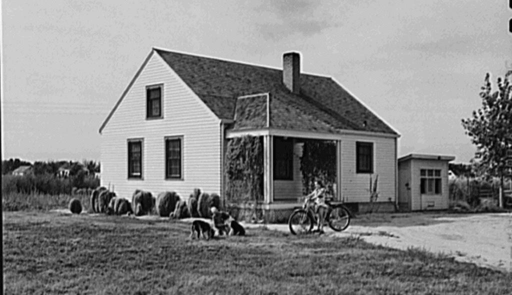
Dr. N: How do you know it’s Uncle Charlie? Does he have features you recognize?
S: (subject is squirming with excitement in her chair) Sure, sure-just as I remember him-jolly, kind, lovable-he is next to me. (chuckles)
Dr. N: What is so funny?
S: Uncle Charlie is just as fat as he used to be.
Dr. N: And what does he do next?
S: He is smiling and holding out his hand to me
Dr. N: Does this mean he has a body of some sort with hands?
S: (laughs) Well, yes and no. I’m floating around and so is he. It’s … in my mind … he is showing all of himself to me … and what I am most aware of … is his hand stretched out to me.
One one hand, it is the residual memories that you might have of an individual, and on the other hand it is greatly influenced by the default image associated with the other consciousness.
Dr. N: Why is he holding out his hand to you in a materialized way? S: (pause) To … comfort me … to lead me … further into the light.
Dr. N: And what do you do?
S: I’m going with him and we are thinking about the good times we spent together playing in the hay on the farm.
Dr. N: And he is letting you see all this in your mind so you will know who he is?
S: Yes … as I knew him in my last life … so I won’t be afraid. He knows I am still a little shocked over my death. (subject had died suddenly in an automobile accident)
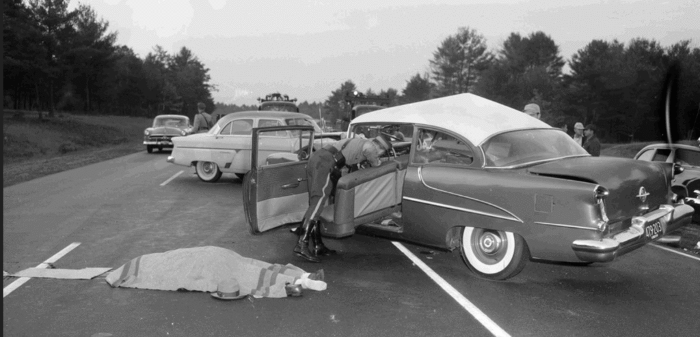
Dr. N: Then, right after death, no matter how many deaths we may have experienced in other lives, it is possible to be a little fearful until we get used to the spirit world again?
S: It’s not really fear-that’s wrong-more like I’m apprehensive, maybe. It varies for me each time. The car crash caught me unprepared. I’m still a little mixed up.
Dr. N: All right, let’s go forward a bit more. What is Uncle Charlie doing now? S: He is taking me to the … place I should go …
Dr. N: On the count of three, let’s go there. One-two-three! Tell me what is happening.
S: (long pause) There… are … other people around … and they look… friendly… as I approach … they seem to want me to join them…
Dr. N: Continue to move towards them. Do you get the impression they might be waiting for you?
S: (recognition) Yes! In fact, I realize I have been with them before (pause) No, don’t go!
Dr. N: What’s happening now?
S: (very upset) Uncle Charlie is leaving me. Why is he going away?
Dr. N: (I stop the dialogue to use standard calming techniques in these circumstances, and then we continue.) Look deeply with your inner mind. You must realize why Uncle Charlie is leaving you at this point?
S: (more relaxed but with regret) Yes … he stays in a … different place than I do … he just came to meet me .. to bring me here.
Dr. N: I think I understand. Uncle Charlie’s job was to be the first person to meet you after your death and see you were okay. I’d like to know if you feel better now, and more at home.
S: Yes, I do. That’s why Uncle Charlie has left me with the others.
A curious phenomenon about the spirit world is that important people in our lives are always able to greet us, even though they may already be living another life in a new body. This will be explained in Chapter Six. In Chapter Ten, I will examine the ability of souls to divide their essence so they can be in more than one body at a time on Earth.
Usually at this juncture in a soul’s passage, the carry-on luggage of Earth’s physical and mental burdens are diminishing for two reasons. First, the evidence of a carefully directed order and harmony in the spirit world has brought back the remembrance of what we left behind before we chose life in physical form. Secondly, there is the overwhelming impact of seeing people we thought we would never meet again after they died on Earth.
Here is another example.
Case 7 – Reunions with loved ones.
Dr. N: Now that you have had the chance to adjust to your surroundings in the spirit world, tell me what effect this place has on you.
S: It’s so … warm and comforting. I’m relieved to be away from Earth. I just want to stay here always. There is no tension, or worries, only a sense of well-being. I’m just floating … how beautiful…
Dr. N: As you continue to float along, what is your next major impression as you pass the spiritual gateway?
S: (pause) Familiarity.
Dr. N: What is familiar?
S: (after some hesitation) Uh mm… people … friends … are here, I think.
Dr. N: Do you see these people as familiar people on Earth?
S: I … have a sensation of their presence … people I knew
Dr. N: All right, keep moving along. What do you see next?
S: Lights… soft… kind of cloudy-like.
Dr. N: As you are moving, does this light continue to look the same?
S: No, they are growing … blobs of energy … and I know they are people!
Dr. N: Are you moving toward them, or are they coming toward you?
S: We are drifting toward each other, but I am going slower than they are because … I’m uncertain what to do
Dr. N: Just relax and continue floating while reporting back to me everything you see.
S: (pause) Now I’m seeing half-formed human shapes-from the waist up only. Their outlines are transparent, too … I can see through them.
Dr. N: Do you see any sort of features to these shapes?
S: (anxiously) Eyes!
Dr. N: You see just eyes?
S: … There is only a trace of a mouth-it’s nothing. (alarmed) The eyes are all around me now… coming closer …
Dr. N: Does each entity have two eyes?
S: That’s right.
Dr. N: Do these eyes have the appearance of human eyes with an iris and pupil?
S: No … different … they are … larger … black orbs … radiating light… towards me … thought … (then with a relieved sigh) oh!
Dr. N: Go on.
S: I’m starting to recognize them-they are sending images into my mind-thoughts about themselves and … the shapes are changing into people!
Dr. N: People with physical human features?
S: Yes. Oh … look! It’s him!
Dr. N: What do you see?
S: (begins to laugh and cry at the same time) I think it’s … yes it’s Larry-he is in front of everybody else-he is the first one I really see … Larry, Larry!
Dr. N: (after giving my subject a chance to recover a little) The soul entity of Larry is in front of an assortment of people you know?
S: Yes, now I know the ones I want most to see are in front… some of my other friends are in the back.
Dr. N: Can you see them all clearly?
S: No, the ones in back are … hazy … far off… but, I have the sensation of their presence. Larry is in front … coming up to me Larry!
Dr. N: Larry is the husband from your last life you told me about earlier?
S: (subject rushes on) Yes-we had such a wonderful life together–Gunther was so strong-everyone was against our marriage in his family-Jean deserted from the navy to save me from the bad life I was living in Marseilles – always wanting me
This subject is so excited her past lives are tumbling one on top of the other. Larry, Gunther, and Jean were all former husbands, but the same soulmate. I was glad we had a chance to review earlier who these people were in sessions before this interval of recall in the spirit world. Besides Larry, her recent American husband, Jean was a French sailor in the nineteenth century and Gunther was the son of German aristocrats living in the eighteenth century.
Dr. N: What are the two of you doing right now?
S: Embracing.
Dr. N: If a third party were to look at the two of you embracing at this moment, what would they see?
S: (no answer)
Dr. N: (the subject is so engrossed in the scene with her soulmate there are tears streaming down her face. I wait a moment and then try again.) What would you and Larry look like to someone watching you in the spirit world right now?
S: They would see… two masses of bright light whirling around each other, I guess … (subject begins to settle down and I help wipe the tears off her face with a tissue)
Dr. N: And what does this signify?
S: We are hugging … expressing love … connecting … it makes us happy …
Dr. N: After you meet your soulmate, what happens next?
S: (subject tightly grips the recliner arms) Oh-they are all here-I only sensed them before. Now more are coming closer to me.
Dr. N: And this happens after your husband comes near you?
S: Yes … Mother! She is coming over to me … I’ve missed her so much… oh, Mom… (subject begins to cry again)
Dr. N: All right …
S: Oh, please don’t ask me any questions now-I want to enjoy this (subject appears to be in silent conversation with her mother of the last life)
Dr. N: (I wait for a minute) Now, I know you are enjoying this meeting, but I need you to help me know what is going on.
S: (in a faraway voice) We … we are just holding each other … it’s so good to be with her again
Dr. N: How do you manage to hold each other with no bodies?
S: (with a sigh of exasperation at me) We envelop each other in light, of course.
Dr. N: Tell me what that is like for spirits?
S: Like being wrapped in a bright-light blanket of love.
Dr. N: I see, then ….
S: (subject interrupts with a high pitched laugh of recognition) Tim!… it’s my brother-he died so young (a drowning accident at age fourteen in her last life). It’s so wonderful to see him here. (subject waves her arm) And there is my best girl friend Wilma-from next door-we are laughing together over boys like we did while sitting up in her attic.
Dr. N: (after subject mentions her aunt and a couple of other friends) What do you think determines the sequence of how all these people come here to greet you?
S: (pause) Why, how much we all mean to each other-what else?
Dr. N: And with some, you have lived many lives, while with others perhaps only one or two?
S: Yes … I have been with my husband the most.
Dr. N: Do you see your guide around anywhere?
S: He is here. I see him floating off to the side. He knows some of my friends, too … Dr. N: Why do you call your guide a “him?”

S: We all show what we want of ourselves. He always relates to me with a masculine nature. It’s right and very natural.
Dr. N: And does he watch over you in all your lives?
S: Sure, and after death too … here, and he is always my protector.
Our reception committee is planned in advance for us as we enter the spirit world. This case demonstrates how uplifting familiar faces can be to the incoming younger soul.
I find there are a different number of entities waiting in greeting parties after each life.
Although the meeting format varies, depending on a soul’s special needs, I have learned there is nothing haphazard about our spiritual associates knowing exactly when we are due and where to meet us upon our arrival in the spirit world.
Frequently, an entity who is significant to us will be waiting a little in front of the others who want to be on hand as we come through the gateway.
The size of welcoming parties not only changes for everyone after each life, but is drastically reduced to almost nothing for more advanced souls where spiritual comfort becomes less necessary. Case 9, at the end of this chapter, is an example of this type of spiritual passage.
Cases 6 and 7 both represent one of the three ways newly arrived souls are received back into the spirit world. These two souls were met shortly after death by a principal entity, followed by others of decreasing influence. Case 7 recognized people more quickly than Case 6. When we meet such spirits in a gathering right after our death, we find they have been spouses parents, grandparents, siblings, uncles, aunts, cousins, and dear friends in our past lives. I have witnessed some gut- wrenching emotional scenes with my clients at this stage of their passage.
The emotional meetings which take place between souls at this interval in a spiritual passage are only a prelude to our eventual placement within a specific group of entities at our own maturity level.
These meetings provide another emotional high for a subject in superconscious recall. Spiritual organizational arrangements, involving how groups form and are cross-matched with other entities, will be described in subsequent chapters.
For the present, it is important we understand welcoming entities may not be part of our own particular learning group in the spirit world. This is because all the people who are close to us in our lives are not on the same developmental level.
Simply because they choose to meet us right after death out of love and kindness does not mean they will all be part of our spiritual learning group when we arrive at the final destination of this journey.
For instance, in Case 6, Uncle Charlie was clearly a more advanced soul than my subject and may even have been serving in the capacity of a spiritual guide. It was evident to me that one of the primary tasks of Uncle Charlie’s soul was to help Case 6 as a child in the life just ended, and his responsibility continued right after my subject’s death.
With Case 7, the important first contact was Larry, a true soulmate on the same level as this subject. Notice also in Case 7, that my subject’s spiritual guide was not conspicuous among her former relatives and friends. However, as the scene unfolded, there were indications of a spiritual guide orchestrating the whole meeting process while remaining in the background.
I see this in many cases.
The second manner in which we are met right after death involves a quiet, meaningful encounter with one’s spiritual guide where no one else is revealed in the immediate vicinity, as in Case 5.
Case 8 further illustrates this sort of meeting.
What type of after-death meeting we do experience appears to involve the particular style of our spiritual guide along with requisites of our individual character. I find the duration of this first meeting with our guides does vary after each life depending upon the circumstances of that life.
Case 8 shows the very close relationships people have with their spiritual guides.
Many guides have strange sounding names, while others are rather conventional. I find it interesting that the old-fashioned religious term of having a “guardian angel” is now used metaphysically to denote an empathetic spirit.
To be honest, this is a term I once denigrated as being foolishly loaded with wishful thinking and representing an out-dated mythology at odds with the modern world. I don’t have that belief anymore about guardian angels.
I am repeatedly told that the soul itself is androgynous, and yet, in the same breath, clients declare sex is not an unimportant factor.
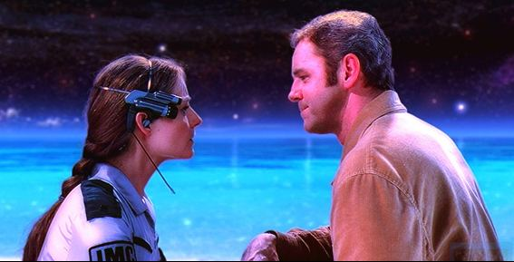
I have learned all souls can and do assume male and female mental impressions toward other entities as a form of identity preference. Cases 6 and 7 show the importance of the newly arrived soul in seeing familiar “faces” identified by gender.
This is also true of the next case. Another reason why I selected Case 8 is to indicate how and why souls choose to visually appear in human form to others in the spirit world.
Case 8 – Spirits in human form
Dr. N: You have just started to actually leave the Earth’s astral plane now, and are moving further and further into the spirit world. I want you to tell me what you feel.
S: The silence … so peaceful …
Dr. N: Is anyone coming to meet you?
S: Yes, it’s my friend Rachel. She is always here for me when I die.
Dr. N: Is Rachel a soulmate who has been with you in other lives, or is she someone who always remains here?
S: (with some indignation) She doesn’t always stay here. No, she is with me a lot-in my mind-when I need her. She is my own guardian (said with possessive pride).
Note: The attributes of guides as differentiated from soulmates and other supportive entities will be examined in Chapter Eight.
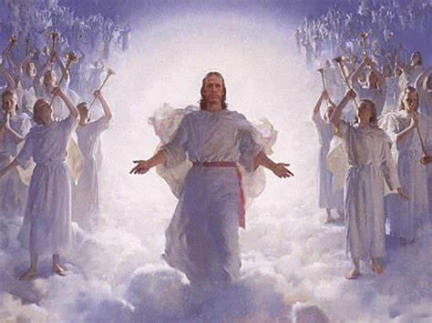
Dr. N: Why do you call this entity a “she”? Aren’t spirits supposed to be sexless?
S: That’s right-in a literal way, because we are capable of both attributes. Rachel wants to show herself to me as a woman for the visual knowing and it is a mental thing as well with her.
Dr. N: Are you locked into male or female attributes during your spiritual existence?
S: No. As souls there are periods in our existence when we are more inclined toward one gender than another. Eventually, this natural preference evens out.
Dr. N: Would you describe how Rachel’s soul actually looks to you at this moment? S: (quietly) A youngish woman … as I remember her best … small, with delicate features … a determined expression on her face … so much knowledge and love.
Dr. N: Then you have known Rachel on Earth?
S: (responding with nostalgia) Once, long ago, she was close to me in life … now she is my guardian.
Dr. N: And what do you feel when you look at her?
S: A calmness … tranquility … love …
Dr. N: Do you and Rachel actually look at each other with eyes in a human way?
S: (hesitates) Sort of … but different. You see the mind behind what we take to be eyes, because that is what we relate to on Earth. Of course, we can do the same thing as humans on Earth, too …
Dr. N: What can you do on Earth with your eyes that can also be done in the spirit world?
S: When you look into a certain person’s eyes on the ground-even people you have just met-and see a light you have known before well, that tells you something about them. As a human you don’t know why-but your soul remembers.
Note: I have heard about the light of spiritual identity being reflected in the human eyes of a soulmate expressed in a variety of ways from many clients. As for myself, I have knowingly experienced this instant recognition only once in my life at the moment I first saw my own wife. The effect is startling, and a bit eerie as well.
Dr. N: Are you saying that sometimes on Earth when two people look at each other, they may feel they have known one another before?
S: Yes, it’s deja vu.
Dr. N: Let’s go back to Rachel in the spirit world. If your guardian did not project an image of herself in human form to you, would you have known her anyway?
S: Well, naturally we can always identify each other by the mind. But, it’s nicer this way. I know it sounds crazy, but it’s a … social thing … seeing a familiar face puts you at ease.
Dr. N: Seeing human features of people you knew in past lives is a good thing then, particularly in the readjustment period right after leaving Earth?
S: Yeah, otherwise you feel a little lost at first … lonesome … and maybe confused, too … seeing people as they were helps me get used to things here faster when I first come back, and seeing Rachel is always a big boost.
Dr. N: Does Rachel present herself to you in human form right after each death on Earth as a way of getting you readjusted to the spirit world?
S: (eagerly) Oh, yes-she does! And she gives me security. I feel better when I see others I have known before too …
Dr. N: And do you speak to these people?
S: No one speaks, we communicate by the mind.
Dr. N: Telepathically?
S: Yes.
Dr. N: Is it possible for souls to have private conversations which cannot be telepathically picked up by others?
S: (pause) … for intimacy-yes.
Dr. N: How is this done?
S: By touch-it’s called touching communication.
Note: When two spirits come so close to each other they are conjoined, my subjects say they can send private thoughts by touch which passes between them as “electrical sound impulses.” In most instances, subjects in hypnosis do not wish to talk to me about these personal confidences.
Dr. N: Could you clarify for me how human features can be projected by you as a soul?
S: From … my mass of energy… I just think of the features I want … but I can’t tell you what gives me the ability to do this.
Dr. N: Well, then, can you tell me why you and the other souls project certain features at different times?
S: (long pause) It depends on where you are in your movements around here … when you see another… and your state of mind then.
Dr. N: That’s what I want to get at. Tell me more about recognition.
S: You see, recognition depends on a person’s … feelings when you meet them here. They will show you what they want you to see of themselves and what they think you want to see. It also depends on the circumstances of your meeting with them.
Dr. N: Can you be more specific? What different circumstances can cause energy forms to materialize in a certain way toward other spirits?
S: It is the difference between your being on their turf or your turf. They may choose to show you one set of features in one place, while in another you might see something else.
Note: Spiritual “territory” will be explained as we proceed further into the spirit world.
Dr. N: Are you telling me that a soul may show you one face at the gateway to the spirit world and another image later in a different situation?
S: That’s right. Dr. N: Why?
S: Like I was telling you, a lot of how we present ourselves to each other depends on what we are feeling right then … what relationship we have with a certain person and where we are.
Dr. N: Please tell me if I understand all this correctly. The identity souls project to each other depends on timing and location in the Spirit world as well as mood, and maybe psychological states of mind when they meet?
S: Sure, and it works both ways … it’s interconnecting.
Dr. N: Then, how can we know the true character of a soul’s consciousness with all these changes in each other’s image?
S: (laughs) The image you project never hides who you really are from the rest of us. Anyway, it’s not the same kind of emotion we know on Earth. Here it is more … abstract. Why we project certain features and thoughts … is based on a … confirmation of ideas.
Dr. N: Ideas? Do you mean your sentiments at the time?
S: Yes … sort of… because these human features were part of our physical lives in other places when we discovered things … and developed ideas … it is all a … continuum for us to use here.
Dr. N: Well, if in each of our past lives we have a different face, which one do we assume between lives?
S: We mix it up. You assume those features which the person you see will most recognize as you, depending on what you want to communicate.
Dr. N: What about communication without projecting features?
S: Sure, we do that-it’s normal-but I mentally associate with people more quickly with features.
Dr. N: Do you favor projecting a certain set of facial features?
S: Hmm … I like the face with the mustache … having a rock-hard jaw…
Dr. N: You mean when you were Jeff Tanner, the cowpuncher from Texas in the life we discussed earlier?
S: (laughs) That’s it-and I have had faces like Jeff’s in other lives, too.
Dr. N: But, why Jeff? Was it just because he was you in your last life?
S: No, I felt good as Jeff. It was a happy, uncomplicated life. Damn, I looked great! My face resembled those billboard smoking ads you used to see along the highway. (chuckling) I enjoy showing off my handle-bar mustache as Jeff.
Dr. N: But that was only one life. People not associated with you in that life may not recognize you here.
S: Oh, they would get it was me soon enough. I could change to something else, but I like myself as Jeff the best right now.
Dr. N: So, this goes back to what you were saying about all of us really only having one identity, regardless of the number of facial features we might project as souls?
S: Yeah, you see everyone as they truly are. Some only want their best side to show because of what you might think of them-they don’t fully appreciate that it is what you are striving for which is important, not how you appear. We get a lot of laughs about how spirits think they should look, even taking faces they never had on Earth, and that’s okay.
Dr. N: Are we talking about the more immature souls, then?
S: Yes, usually. They can get stuck … we don’t judge … in the end they are going to be all right.
Dr. N: I think of the spirit world as a place of supreme all-knowing intelligent consciousness and you make it appear that souls have moods and vanity as though they were back on Earth?
S: (burst of laughter) People are people no matter how they look on their physical worlds.
Dr. N: Oh, do you see souls who have gone to planets other than Earth?
S: (pause) Once in a while …
Dr. N: What features do souls from other planets besides Earth show you?
S: (evasively) I … kind of stick with my own people, but we can assume any features we want for communication …
Note: Gaining information from the subjects I have had who are able to recall leading physical past lives in non-human form on other worlds is always challenging. Recollection of these experiences are usually limited to older, more advanced souls, as we will see later.
For now, and apologies to any loose statements that I have made in the past, we can consider the “universe” outside or next to the physical universe to be segregated into sub-universe or regions that each favor a certain species. It’s a spawning process and the lack of proper terminology can hamper our study of this.

Dr. N: Is this ability to transmit features to each other as souls a gift the creator provided for us based upon spiritual need?
S: How should I know-I’m not God!
The concept of souls having fallibility comes as a surprise to some people. The statements of Case 8 and all my other clients indicate most of us are still far from perfect beings in the spirit world. The essential purpose of reincarnation is self- improvement. The psychological ramifications of our development, both in and out of the spirit world, is the foundation of my work.
We have seen the importance of meeting other entities while entering the spirit world. Besides uniting with our guides and other familiar beings, I have mentioned a third form of reentry after death. This is the rather disconcerting manner in which a soul is met by no one.
Although it is an uncommon occurrence for most of my clients, I still feel a little sorry for those subjects who describe how they are pulled by unseen forces all alone to their final destinations, where contact is finally made with others. This would be akin to landing in a foreign country where you have been before, but without any baggage handlers or a tourist information desk to assist you with directions. I suppose what bothers me the most about this type of entry is the apparent lack of any soul acclimation.
My own conceptions of what it must be like to be alone at the spiritual gateway and beyond is not shared by those souls who utilize the option of going solo. Actually, people in this category are experienced travelers. As older, mature souls, they seem to require no initial support system. They know right where they are going after death. I suspect the process is accelerated for them as well, because they manage to more rapidly wind up where they belong than those who stop to meet others.
Case 9 is a client who has had a great number of lives, spanning thousands of years. About eight lives before his current one, people finally stopped meeting him at the spiritual gate.
Case 9 – Arriving alone in Heaven.
Dr. N: What happens to you at the moment of death?
S: I feel a great sense of release and I move out fast.
Dr. N: How would you characterize your departure from Earth into the spirit world?
S: I shoot up like a column of light and I’m on my way.
Dr. N: Has it always been this fast for you?
S: No, only after my last series of lives.
Dr. N: Why?
S: I know the way, I don’t need to see anybody-I’m in a hurry.
Dr. N: And it doesn’t bother you that you are not met by anyone?
S: (laughs) There was a time when it was good, but I don’t require that sort of thing anymore.
Dr. N: Whose decision was it to allow you to enter the spirit world without assistance?
S: (pause and then with a shrug) It was … a mutual decision … between my teacher and me … when I knew I could handle things by myself.
Dr. N: And you don’t feel rather lost or lonely right now?
S: Are you kidding? I don’t need my hand held anymore. I know where I’m going and I’m anxious to get there. I’m being pulled along by a magnet and I just enjoy the ride.
Dr. N: Explain to me how this pulling process works which will take you to your destination?
S: I am riding on a wave … a beam of light.
Dr. N: Is this beam electromagnetic, or what?
S: Well … it’s similar to the bands of a radio with someone turning the dial and finding the right frequency for me.
Dr. N: Are you saying you are being guided by an invisible force without much voluntary control and that you can’t speed things up as you did right after death?
S: Yes. I must go with the wave bands of light … the waves have direction and I’m flowing with it. It’s easy. They do it all for you.
Dr. N: Who does it for you?
S: The ones in control … I don’t really know.
Dr. N: Then you are not in control. You don’t have the responsibility of finding your own destination.
S: (pause) My mind is in tune with the movement … I flow with the resonance …
Dr. N: Resonance? You hear sounds?
S: Yes, the wave beam … vibrates … I’m locked into this, too.
Dr. N: Let’s go back to your statement about the radio. Is your spiritual travel influenced by vibrational frequencies such as high, medium, and low resonance quality?
S: (laughing) That’s not bad-yes, and I’m on a line, like a homing beacon of sound and light… and it’s part of my own tonal pattern-my frequency.
Dr. N: I’m not sure I understand how light and vibration combine to set up directional bands.
S: Think of a monster tuning fork inside a flashing strobe light.
Dr. N: Oh, then there is energy here?
S: We have energy-within an energy field. So, it isn’t just the lines we travel on … we generate energy ourselves … we can use these forces depending on our experience.
Dr. N: Then your maturity level does give you some element of control in the rate and direction of travel.
S: Yes, but not right here. Later, when I am settled I can move around much more on my own. Now, I’m being pulled and I’m supposed to go with it.
Dr. N: Okay, stay with this and describe to me what happens next.
S: (short pause) I’m moving alone … being homed into my proper space… going where I belong.
In hypnosis, the analytical conscious mind works in conjunction with the unconscious mind to receive and answer messages directed to our deep-seated memories. The subject in Case 9 is an electrical engineer and thus he utilized some technical descriptions to express his spiritual sensations. This client’s predisposition to explain his thoughts on soul travel in technical terms was encouraged, but not dictated, by my suggestions. All subjects bring their own segments of knowledge to bear on answering my questions about the spirit world. This case used physical laws familiar to him to describe motion, whereas another person might have said souls move in this tract within a vacuum.
Before continuing with the passage of souls into the spirit world, I want to discuss those entities who either have not made it this far after physical death, or will be diverted from the normal travel route.
The Displaced Soul
THERE are souls who have been so severely damaged they are detached from the mainstream of souls going back to a spiritual home base. Compared to all returning entities, the number of these abnormal souls is not large. However, what has happened to them on Earth is significant because of the serious effect they have on other incarnated souls.
There are two types of displaced souls:
- Those who do not accept the fact their physical body is dead and fight returning to the spirit world for reasons of personal anguish, (ghosts) and…
- Those souls who have been subverted by, or had complicity with, criminal abnormalities in a human body.
In the first instance, displacement is of the soul’s own choosing.
While in the second case, spiritual guides deliberately remove these souls from further association with other entities for an indeterminate period.
In both situations, the guides of these souls are intimately concerned with rehabilitation.
But because the circumstances are quite different between each type of displaced soul, I will treat them separately.
Ghosts
The first type we call ghosts. These spirits refuse to go home after physical death and often have unpleasant influences on those of us who would like to finish out our own human lives in peace.
These displaced souls are sometimes falsely called “demonic spirits” because they are accused of invading the minds of people with harmful intent.
The subject of negative Spirits has produced serious investigations in the field of parapsychology. Unfortunately, this area of spirituality has also attracted a fringe element of the unscrupulous associated with the occult, who prey on the emotions of susceptible people.
The troubled spirit is an immature entity with unfinished business in a past life on Earth.
They may have no relation to the living person who is disrupted by them.
It is true that some people are convenient and receptive conduits for negative spirits who wish to express their querulous nature. This means that someone who is in a deep meditative state of consciousness might occasionally pick up annoying signal patterns from a discarnated being whose communications can range from the frivolous to provocative. These unsettled entities are not spiritual guides.
Real guides are healers and don’t intrude with acrimonious messages.
More often than not, these uncommon haunted spirits are tied to a particular geographic location.
![On November 19, 1995, Wem Town Hall in Shropshire, England burned to the ground. Many spectators gathered to watch the old building, built in 1905, as it was being consumed by the flames. Tony O'Rahilly, a local resident, was one of those onlookers and took photos of the spectacle with a 200mm telephoto lens from across the street. One of those photos shows what looks like a small, partially transparent girl standing in the doorway. Nether O'Rahilly nor any of the other onlookers or firefighters recalled seeing the girl there.](../assets/img/the-geography-of-heaven-journey-of-souls-full-text-by-michael-newton-par-4afeab/pic17.jpg)
Researchers who have specialized in the phenomena of ghosts indicate those disturbed entities are caught in a “no-man’s land” between the lower astral planes of Earth and the spirit world.
From my own research, I don’t believe these souls are lost in space, nor are they demonic. They choose to remain within the Earth plane after physical death for a time by their own volition due to a high level of discontent. In my opinion, they are damaged souls because they evidence confusion, despair, and even hostility to such an extent they want their guides to stay away from them.
We do know a negative, displaced entity can be reached and handled by various means, such as exorcism, to get them to stop interfering with human beings. Possessing spirits can be persuaded to leave and eventually make a proper transition into the spirit world.
If we have a spirit world governed by order, with guides who care about us, how can maladaptive souls (who exert negative energy upon incarnated beings) be allowed to exist?
One explanation is that we still have free will, even in death.
Another is that since we endure so many upheavals in our physical universe, then spiritual irregularities and deviations from the normal exodus of souls ought to be anticipated as well.
Discarnate, unhappy spirits who trap themselves are possibly part of a grand design.
When they are ready, these souls will be taken by the hand away from Earth’s astral plane and guided to their proper place in the spirit world.
The Evil Soul.
I turn now to the far more prevalent second type of disturbed soul. These are souls who have been involved with evil acts.
We should first speculate if a soul can be considered culpable or guilt-free when it occupied the offending criminal brain? Is the soul mind or human ego responsible, or are they the same?
Occasionally, a client will say to me, “I feel possessed by an inner force which tells me to do bad things.”
There are mentally ill people who feel driven by opposing forces of good and evil over which they believe they have no control.
After working for years with the superconscious minds of people under hypnosis, I have come to the conclusion that the five-sensory human can negatively act upon a soul’s psyche.
We express our eternal self through dominant biological needs and the pressures of environmental stimuli which are temporary to the incarnated soul. Although there is no hidden, sinister self within our human form, some souls are not fully assimilated. People not in harmony with their bodies feel detached from themselves in life.
This condition does not excuse souls from doing their utmost to prevent evil involvement on Earth. We see this in human conscience. It is important we distinguish between what is exerting a negative force on our mind and what is not.
Hearing an inner voice which may suggest self-destruction to ourselves or someone else is not a demonic spiritual entity, an alien presence, nor a malevolent renegade guide. Negative forces emanate from ourself.
The destructive impulses of emotional disorders, if left untreated, inhibit soul development. Those of us who have experienced unresolved personal trauma in our lives carry the seeds of our own destruction. This anguish affects our soul in such a way that it seems we are not whole. For instance, excessive craving and addictive behavior, which is the outgrowth of personal pain, inhibits the expression of a healthy soul and may even hold a soul in bondage to its host body.
Does the extent of contemporary violence mean that we have more souls “going wrong” today than in the past?
If nothing else, our over-population and mind- altering drug culture should support this conclusion. On the positive side, Earth’s international level of consciousness toward human suffering appears to be rising. I’ve been told that in every era of Earth’s bloody history there has always been a significant number of souls unable to resist and successfully counter human cruelty. Certain souls, whose hosts have a genetic disposition to abnormal brain chemistry, are particularly at risk in a violent environment.
We see how children can be so damaged by physical and emotional family abuse that, as adults, they commit premeditated acts of atrocity without feelings of remorse. Since souls are not created perfect, their nature can be contaminated during the development of such a life form.
If our transgressions are especially serious we call them evil.
My subjects say to me no soul is inherently evil, although it may acquire this label in human life. Pathological evil in humans is characterized by feelings of personal impotence and weakness which is stimulated by helpless victims.
Although souls who are involved with truly evil acts should generally be considered at a low level of development, soul immaturity does not automatically invite malevolent behavior from a damaged human personality.
The evolution of souls involves a transition from imperfection to perfection based upon overcoming many difficult body assignments during their task-oriented lives.
Souls may also have a predisposition for selecting environments where they consistently don’t work well, or are subverted.
Thus, souls may have their identity damaged by poor life choices.
However, all souls are held accountable for their conduct in the bodies they occupy. We will see in the next chapter how souls receive an initial review of their past life with guides before moving on to join their friends.
But what happens to souls who have, through their bodies, caused extreme suffering to another?
If a soul is not capable of ameliorating the most violent human urges in its host body, how is it held accountable in afterlife? This brings up the issue of being sent to heaven or hell for good and bad deeds because accountability has long been a part of our religious traditions.
On the wall of my office hangs an Egyptian painting, “The Judgment Scene,” as represented in the Book of the Dead, which is a mythological ritual of death over 7,000 years old.
The ancient Egyptians had an obsession with death and the world beyond the grave because, in their cosmic pantheon, death explained life. The picture shows a newly deceased man arriving in a place located between the land of the living and the kingdom of the dead.
He stands by a set of scales about to be judged for his past deeds on Earth.
The master of ceremonies is the god Anubis, who carefully weighs the man’s heart on one pan of the scale against the ostrich feather of truth on the opposite side.
The heart, not the head, represented the embodiment of a person’s soul-conscience to the Egyptians.
It is a tense moment.
A crocodile-headed monster is crouched nearby with his mouth open, ready to devour the heart if the man’s wrongs outweigh the good he did in life. Failure at the scales would end the existence of this soul.
I get quite a few comments from my clients about this picture.
A metaphysically oriented person would insist no one is denied entrance into the kingdom of afterlife, regardless of how unfavorably balanced the scales might be toward past conduct.
Is this belief true? Are all souls given the opportunity to transmute back into the spirit world the same way, irrespective of their association with the bodies they occupied?
To answer this question, I should begin by mentioning that a large segment of society believes all souls do not go to the same place. More moderate theology no longer stresses the idea of hellfire and brimstone for sinners. However, many religious sects indicate a spiritual coexistence of two mental states of good and evil.
For the “bad” soul there are ancient philosophical pronouncements denoting a separation from the God-Essence as a means of punishment after death.
The Tibetan Book of the Dead, a source of religious belief thousands of years older than the Bible, describes the state of consciousness between lives (the Bardo) as a time when “the evil we have perpetrated projects us into spiritual separation.”
If the peoples of the East believed in a special spiritual location for evil doers, was this idea similar to the concept of purgatory in the Western world?
From its earliest beginnings, Christian doctrine defined purgatory as a transitory state of temporary banishment for sins of a minor nature against humanity. The Christian purgatory is supposed to be a place of atonement, isolation, and suffering.
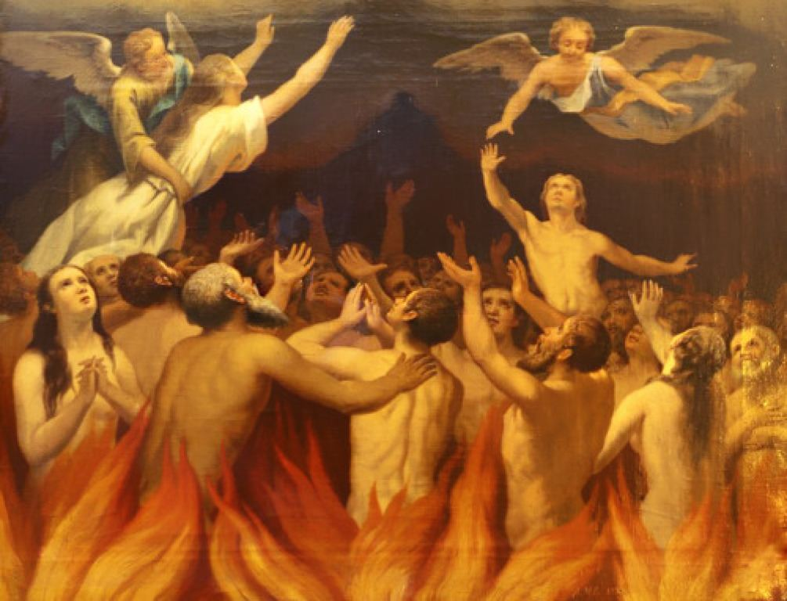
When all negative karma is removed, these souls are eventually allowed into heaven. On the other hand, souls committing major (deadly) sins are condemned to hell forever.
Does hell exist to permanently separate good souls from bad ones? All my case work with the spirits of my subjects has convinced me there is no residence of terrible suffering for souls, except on Earth. I am told all souls go to one spirit world after death where everyone is treated with patience and love.
However, I have learned that certain souls do undergo separation in the spirit world.
This happens at the time of their orientation with guides.
They are not activated along the same travel routes as other souls. Those of my subjects who have been impeded by evil report that souls whose influence was too weak to turn aside a human impulse to harm others will go into seclusion upon reentering the spirit world. These souls don’t appear to mix with other entities in the conventional manner for quite a while.
I have also noticed that those beginner souls who are habitually associated with intensely negative human conduct in their first series of lives must endure individual spiritual isolation.
Ultimately, they are placed together in their own group to intensify learning under close supervision.
This is not punishment, but rather a kind of purgatory for the restructuring of self-awareness with these souls.
Because wrongdoing takes so many forms on Earth, spiritual instruction and the type of isolation used is varied for each soul. The nature of these variations apparently is evaluated during orientation at the end of each life.
Relative time of seclusion and reindoctrination is not consistent either.
For instance, I have had reports about maladjusted spirits who have returned back to Earth directly after a period of seclusion in order to expunge themselves as soon as possible by a good incarnated performance.
Here is an example, as told to me by a soul who was acquainted with one of these spirits.
Case 10 – The “second chance ” at redemption.
Dr. N: Do souls bear responsibility for their involvement with flawed human beings who injure others in life?
S: Yes, those who have wronged others savagely in a life-I knew one of those souls.
Dr. N: What do you know about this entity? What happened after this soul returned to the spirit world following that life?
S: He … had hurt a girl … terribly … and did not rejoin our group. There was extensive private study for him because he did so poorly while in that body.
Dr. N: What was the extent of his punishment?
S: Punishment is … a wrong interpretation … it’s regeneration. You have to recognize this is a matter for your teacher. The teachers are more strict with those who have been involved with cruelty.
Dr. N: What does “more strict” mean to you in the spirit world?
S: Well, my friend didn’t go back with us … his friends … after this sad life where he hurt this girl.
Dr. N: Did he come through the same spiritual gateway as yourself when he died?
S: Yes, but he did not meet with anybody … he went directly to a place where he was alone with the teacher.
Dr. N: And then what happened to him?
S: After awhile … not long … he returned to Earth again as a woman … where people were cruel … physically abusive … it was a deliberate choice … my friend needed to experience that …
Dr. N: Do you think this soul blamed the human brain of his former host body for hurting the girl?
S: No, he took what he had done … back into himself … he blamed his own lack of skill to overcome the human failings. He asked to become an abused woman himself in the next life to gain understanding… to appreciate the damage he had done to the girl.
Dr. N: If this friend of yours did not gain understanding and continued involving himself with humans who committed wrongful acts, could he be destroyed as a soul by someone in the spirit world?
S: (long pause) You can’t destroy energy exactly … but it can be reworked… negativity which is unmanageable … in many lives … can be readjusted.
Dr. N: How?
S: (vaguely) … Not by destruction … remodeling …
Case 10 did not respond further to this line of questioning, and other subjects who know something about these damaged souls are rather sparse with their information. Later, we will learn a bit more about the formation and restoration of intelligent energy.
Most errant souls are able to solve their own problems of contamination. The price we pay for our misdeeds and the rewards received for good conduct revolve around the laws of karma. Perpetrators of harm to others will do penance by setting themselves up as future victims in a karmic cycle of justice. The Bhagavad Gita, another early Eastern scripture which has stood the test of thousands of years, has a passage which says, “souls of evil influence must redeem their virtue.”
No study of life after death would have any meaning without addressing how karma relates to causality and justice for all souls. Karma by itself does not denote good or bad deeds. Rather it is the result of one’s positive and negative actions in life. The statement, “there are no accidents in our lives,” does not mean karma by itself impels. What it does is propel us forward by teaching lessons. Our future destiny is influenced by a past from which we cannot escape, especially when we injure others.
The key to growth is understanding we are given the ability to make mid-course corrections in our life and having the courage to make necessary changes when what we are doing is not working for us. By conquering fear and taking risks, our karmic pattern adjusts to the effects of new choices. At the end of every life, rather than having a monster waiting to devour our souls, we serve as our most severe critic in front of teacher-guides.
This is why karma is both just and merciful. With the help of our spiritual counselors and peers we decide on the proper mode of justice for our conduct.
Some people who believe in reincarnation also think if negative souls do not learn their lessons within a reasonable span of lives, they will be eliminated and replaced by more willing souls.
My subjects deny this premise.
There is no set path of self-discovery designed for all souls. As one subject told me, “souls are assigned to Earth for the duration of the war.”
This means souls are given the time and opportunity to make changes for growth. Souls who continue to display negative attitudes through their human hosts must overcome these difficulties by continually making an effort to change. From what I have seen, no negative karma remains attached to a soul who is willing to work during their many lives on this planet.
It is an open question whether a soul should be held entirely at fault for humanity’s irrational, unsocialized, and destructive acts.
Souls must learn to cope in different ways with each new human being assigned to them. The permanent identity of a soul stamps the human mind with a distinctive character which is individual to that soul.
However, I find there is a strange dual nature between the soul mind and human brain.
I will discuss this concept further in later chapters, after the reader learns more about the existence of souls in the spirit world…
This is the first part of a multiple part series. To go to the next part, please click HERE.
Do you want to see the main index?
You can access the main index of these kinds of articles here…
Articles & Links
You’ll not find any big banners or popups here talking about cookies and privacy notices. There are no ads on this site (aside from the hosting ads – a necessary evil). Functionally and fundamentally, I just don’t make money off of this blog. It is NOT monetized. Finally, I don’t track you because I just don’t care to.
To go to the MAIN Index;
- You can start reading the articles by going HERE.
- You can visit the Index Page HERE to explore by article subject.
- You can also ask the author some questions. You can go HERE .
- You can find out more about the author HERE.
- If you have concerns or complaints, you can go HERE.
- If you want to make a donation, you can go HERE.
Please kindly help me out in this effort. There is a lot of effort that goes into this disclosure. I could use all the financial support that anyone could provide. Thank you very much.
[wp_paypal_payment]